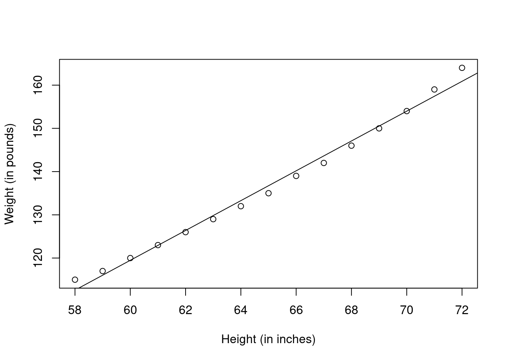
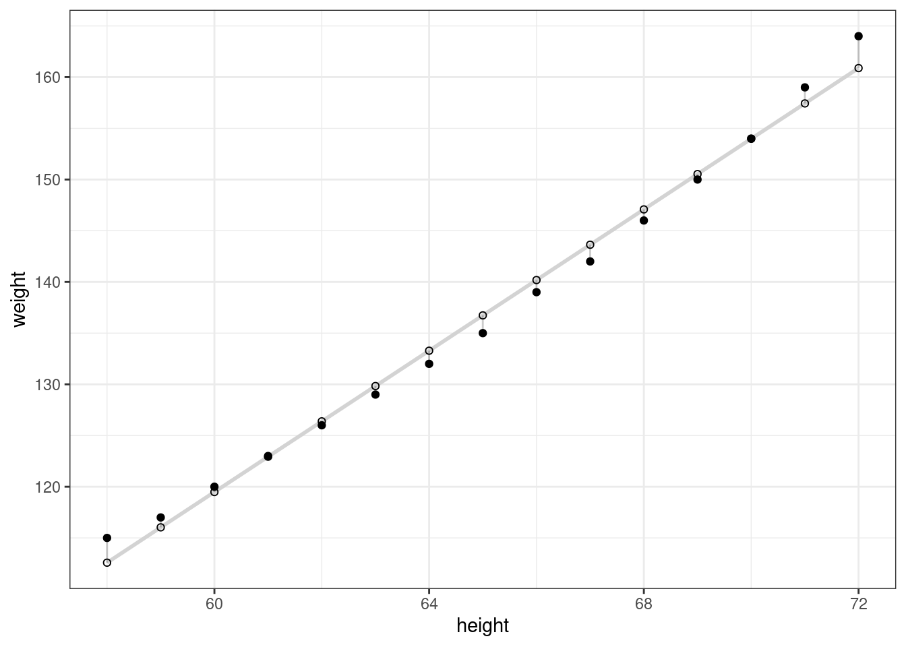

Chapter 2 Regresión lineal simple.
2.1 Ejemplo base de datos “women”
Utilizaremos la base de datos preinstalada women. Esta base de datos proporciona la altura y peso de un grupo de 15 mujeres.
##
## Call:
## lm(formula = weight ~ height, data = women)
##
## Residuals:
## Min 1Q Median 3Q Max
## -1.7333 -1.1333 -0.3833 0.7417 3.1167
##
## Coefficients:
## Estimate Std. Error t value Pr(>|t|)
## (Intercept) -87.51667 5.93694 -14.74 0.0000000017110819 ***
## height 3.45000 0.09114 37.85 0.0000000000000109 ***
## ---
## Signif. codes: 0 '***' 0.001 '**' 0.01 '*' 0.05 '.' 0.1 ' ' 1
##
## Residual standard error: 1.525 on 13 degrees of freedom
## Multiple R-squared: 0.991, Adjusted R-squared: 0.9903
## F-statistic: 1433 on 1 and 13 DF, p-value: 0.00000000000001091En la salida podemos observar la fórmula del modelo. El peso “weight” es la variable dependiente y altura “height” es la variable independiente o explicativa.
El siguiente elemento son los residuos “Residuals”. Los residuos son básicamente la diferencia entre el valor actual observado y el valor respuesta estimado con el modelo. La sección de residuos muestra el valor mínimo, primer cuartil, mediana, tercer cuartil, y valor máximo. Con el fin de evaluar cómo de bueno es el ajuste del modelo nos fijamos en la simetría de la distribución. En nuestro caso la mediana/media de los residuos es cercana a 0, lo que sugiere que el modelo se ajusta bastante bien a los valores observados.
La siguiente sección se refiere a los coeficientes del modelo. Teóricamente, en la regresión simple, los coeficientes son dos constantes desconocidas que representan la intersección y la pendiente de los términos del modelo lineal. La intersección y la pendiente son el resultado de generar la línea de ajuste lo más cercana posible a los puntos de nuestra base de datos.
“Estimate” tiene dos filas. La primera es la intersección. La segunda file es la pendiente. En nuestro ejemplo la asociación entre el peso y la altura. La pendiente en nuestro ejemplo nos dice que por cada pulgada (in) en altura el peso aumenta 3.45 libras (1 lbs = 0.453 kg).
“Standard Error” mide la cantidad media que los coeficientes estimados varia de la cantidad real media en nuestra variable respuesta. En una situación ideal queremos valores pequeños en relación con sus coeficientes. En nuestro ejemplo, observamos que por cada pulgada en altura el peso aumenta 3.45 libras. El error estándar se puede utilizar para obtener un estimador de la diferencia esperada en el caso que ejecutemos el modelo una y otra vez. En otras palabras, podemos decir que en peso estimado puede variar en 0.091 pulgadas. Los errores estándar también pueden utilizarse para calcular los intervalos de confianza y para evaluar estadísticamente la hipótesis de asociación entre la altura y peso existe.
“t-value” es la medida de cuantas desviaciones estándar nuestros coeficientes se alejan de 0. Queremos que se alejen de 0, pues esto indicaría que podemos rechazar la hipótesis nula. Esto significa que podríamos confirmar la existencia de una asociación entre la altura y el peso. En nuestro ejemplo, el valor “t-statistic” están alejados de 0 y son grandes en relación con los errores standard, lo cual indica que la relación entre la altura y el peso existe. En general, los “t-value” se utilizan para determinar los “p-value”.
“Pr(>t)” se refiere a la probabilidad de observar un valor igual o más grande que t. Un “p-value” pequeño indica que es poco probable observar una relación entre la variable predictora (altura) y la variable respuesta (peso) debido al azar. Tradicionalmente, un “p-value” 5% o más pequeño como punto de corte. En nuestro ejemplo, el “p-value” son cercanos a 0. Un valor pequeño de “p-value” para la intersección y pendiente indica que podemos rechazar la hipótesis nula, lo que nos permite concluir que hay una relación entre la altura y el peso.
El “Residual Standard Error” es una medida de la calidad de la regresión lineal. En teoría, en un modelo lineal se asume un término de error. Debido al término de error, no podemos predecir perfectamente la variable respuesta (peso) a partir de nuestra variable predictora (altura). En nuestro ejemplo, el peso estimado puede desviarse de la verdadera línea de regresión en aproximadamente 1.525 libras como media. En nuestro ejemplo el “Residual Standard Error” se ha calculado con 13 grados de libertad. De una forma simplista, los valores o grados de libertad son número de datos que se utilizaron en la estimación de los parámetros después de tener en cuenta dichos parámetros (restricción). En nuestro caso, tenemos 15 datos y 2 parámetros (intersección y pendiente).
“Multiple R-squared, Adjusted R-squared” son medidas que nos proporcionan información de cómo de bueno es el ajuste. “Multiple R-squared” es una medida de la relación lineal entre nuestra variable predictora (altura) y nuestra variable respuesta (peso). Toma un valor entre 0 y 1 (un número cercano a 0 indica que la regresión no explica bien la variabilidad de la variable respuesta y un número cercano a 1 explica la variabilidad observada en la variable respuesta). En nuestro ejemplo, “Multiple R-squared” es 0.991 o 99% de la variabilidad encontrada en la variable respuesta (peso) se puede explicar con la variable predictora (altura). “Multiple R-squared” siempre aumenta con la inclusión de más variable predictoras en el modelo. Debido a esto se utiliza “Adjusted R-squared” que está ajustado por el número de variables consideradas.
“F-Statistic” es un buen indicador para saber si existe una relación en la variable predictora y la variable respuesta. Si el “F-Statistic” se aleja de 1 es una buena señal. Sin embargo, cuánto más grande debe ser “F-Statistic” depende tanto del número de datos como del número de predictores. Generalmente, cuando el número de datos es grande, un estadístico F que sea solo un poco mayor que 1 ya es suficiente para rechazar la hipótesis nula. Si el número de puntos de datos es pequeño, se requiere un “F-Statistic” grande para poder determinar que puede haber una relación entre las variables de predicción y respuesta. En nuestro ejemplo, el “F-Statistic” es 1433, que es mucho mayor que 1 dado el tamaño de nuestros datos (Kabacoff, 2011).
## [1] 0.00000000000000004808075
## [1] 115 117 120 123 126 129 132 135 139 142 146 150 154 159 164## 1 2 3 4 5 6 7 8 9 10 11
## 2.41666667 0.96666667 0.51666667 0.06666667 -0.38333333 -0.83333333 -1.28333333 -1.73333333 -1.18333333 -1.63333333 -1.08333333
## 12 13 14 15
## -0.53333333 0.01666667 1.56666667 3.11666667#par(mfrow=c(1,1))
plot(women$height,women$weight,
xlab="Height (in inches)",
ylab="Weight (in pounds)")
abline(fit)
library(ggplot2)
women$predicted <- predict(fit)
ggplot(women, aes(x = height, y = weight)) +
geom_smooth(method = "lm", se = FALSE, color = "lightgrey") +
geom_segment(aes(xend = height, yend = predicted), alpha = .2) +
geom_point() +
geom_point(aes(y = predicted), shape = 1) +
theme_bw() ## `geom_smooth()` using formula = 'y ~ x'
Con la información generada se puede predecir que la ecuación es:
\(\hat{weight} = -87.52 + 3.45 x height\)
Una altura de 0 es imposible, por lo tanto, es complicado darle una interpretación a la intersección. La intersección en este caso es solamente un constante de ajuste. De la columna Pr(>|t|), podemos ver que el coeficiente de regresión (3.45) es significativamente diferente de cero (p < 0.001) e indica que hay un incremento esperado de 3.45 libra de peso por cado 1 pulgada de aumento en la altura. La multiple “R-squared” (0.991) indica que el modelo explica el 99.1% de la varianza en pesos. El error residual estándar (1.53 libra) se puede interpretar como la media de error en el peso estimado por la altura usando el presente modelo. Podemos observar que los residuales más grande tiene lugar para las alturas más bajas y altas.
2.2 Diagnosticos de la regresión
De momento no sabemos si el modelo generado es adecuado. Hay que tener en cuenta que los parámetros de la regresión dependen del grado con el que se cumplen las asunciones estadísticas de los métodos de mínimos cuadrados.
Para entender los gráficos generados, hay que tener en cuenta las asunciones para los modelos de mínimos cuadrados:
Normalidad: si la variable dependiente se distribuye normalmente para un conjunto fijo de valores predictores, entonces los valores residuales deben distribuirse normalmente con una media de 0. La gráfica de QQ normal es una gráfica de probabilidad de los residuos estandarizados frente a los valores que se esperaría bajo normalidad. Si ha cumplido con la suposición de normalidad, los puntos de este gráfico deben estar en la línea recta de 45 grados. Como no es así, claramente ha violado ligeramente supuesto de normalidad.
Independencia: no se puede saber si los valores de las variables dependientes son independientes. Se debe de conocer cómo se recogieron los datos. No hay ninguna razón a priori para creer que el peso de una mujer influye en el peso de otra. Si se incluyeran datos de una misma familia, es posible que fuera necesario ajustar por el supuesto de independencia.
Linealidad: si la variable dependiente está relacionada linealmente con las variables independientes, no debe haber una relación sistemática entre los residuos y los valores estimados (“Residuals vs Fitted”). En otras palabras, el modelo debe capturar toda la varianza sistemática presente en los datos, sin dejar nada más que ruido aleatorio. En el gráfico de Residuos vs. Ajustado, verá una clara evidencia de una relación curva, lo que sugiere que es posible que desee agregar un término cuadrático a la regresión.
Homoscedasticidad: si ha cumplido con el supuesto de varianza constante, los puntos en el gráfico Escala-Ubicación (Scale-Location) deben ser una banda aleatoria alrededor de una línea horizontal. Parece cumplir con esta suposición.
Finalmente, el gráfico de Residuals vs. Leverage proporciona información sobre las observaciones individuales que quizás desee atender. El gráfico identifica valores atípicos, puntos de influciencia alta y observaciones influyentes. Específicamente:
Un valor atípico es una observación que no se predice bien mediante el modelo de regresión ajustado (es decir, tiene un gran residuo positivo o negativo).
Una observación con un valor de influencia alto tiene una combinación inusual de valores de predicción. Es decir, es un valor atípico en el espacio de predicción. El valor de la variable dependiente no se usa para calcular el la influencia de una observación.
Una observación influyente es una observación que tiene un impacto desproporcionado en la determinación de los parámetros del modelo. Las observaciones influyentes se identifican mediante una estadística llamada distancia de Cook o D. de Cook.